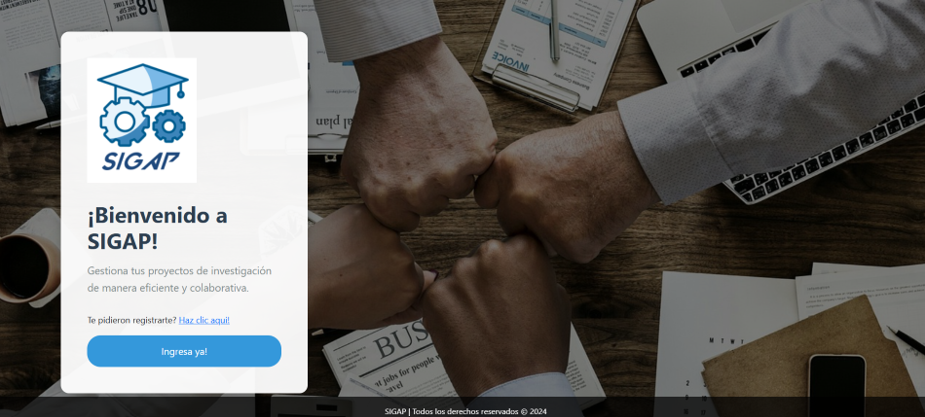
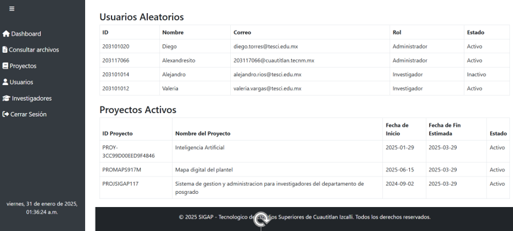
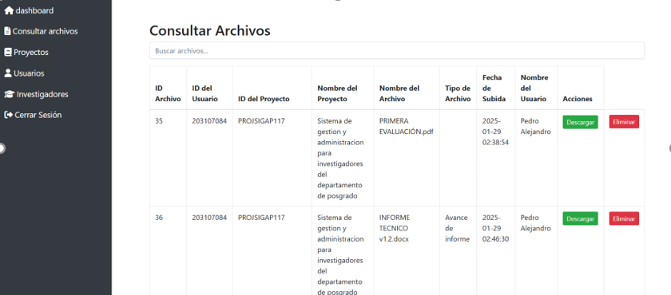

La creación de software es un proceso complejo que combina diversas habilidades técnicas y experiencias prácticas. Este informe detalla las principales experiencias y habilidades necesarias para desarrollar software de calidad.
Trabajo Freelance
He trabajado como freelance junto con un grupo de amigos, desarrollando software a medida para diversos clientes. Esta experiencia me ha permitido: Colaborar en Proyectos Reales: Participar en el ciclo completo de desarrollo de software, desde la creación de las ideas hasta la entrega final de los productos. Gestión de Proyectos: Aprender a manejar el tiempo y los recursos de manera eficiente para cumplir con los plazos establecidos.
Diseño de UX y UI He desarrollado mis habilidades en la parte de diseño de experiencia de usuario (UX) y de interfaz de usuario (UI) utilizando diversas plataformas, tales como: Figma: Para la creación de prototipos interactivos y diseño de interfaces. Canva: Para el diseño gráfico de materiales promocionales y presentaciones. Adobe XD: Para el diseño y la creación de wireframes y prototipos de alta fidelidad.
Desarrollo Frontend En el área de desarrollo frontend, tengo experiencia utilizando: HTML y CSS: Para la estructura y el estilo de las páginas web. JavaScript y React: Para crear aplicaciones interactivas y dinámicas. Bootstrap: Para el diseño responsivo y la implementación de componentes predefinidos. SQL: Para la gestión y manipulación de bases de datos, garantizando la integridad y disponibilidad de la información.
Desarrollo de Aplicaciones Móviles Actualmente, estoy aprendiendo sobre la creación de aplicaciones móviles utilizando: Android Studio: Para el desarrollo de aplicaciones en el sistema operativo Android. Kotlin: Como lenguaje de programación para la creación de aplicaciones nativas, aprovechando sus características modernas y su interoperabilidad con Java.
A través de mis experiencias y habilidades en la creación de software, he desarrollado un perfil versátil y adaptable, capaz de enfrentar los desafíos del desarrollo de aplicaciones modernas. Mi compromiso con el aprendizaje continuo y la mejora de mis habilidades técnicas y blandas me posiciona como un profesional preparado para contribuir al éxito de proyectos en el ámbito del software.
Proyecto Sistema Integral de Gestion y Administración de Proyectos para los Investigadores de Sistemas Computacionales:
El proyecto se desarrolló en cuatro fases: investigación y análisis de requisitos, diseño y desarrollo del sistema, pruebas de funcionalidad y corrección de errores, y finalmente la entrega del sistema. Se utilizaron tecnologías como PhpMyAdmin, PHP, HTML5, JavaScript, y Bootstrap para garantizar un sistema robusto y escalable.
El diagrama comienza con el nodo inicial que representa el acceso al sistema mediante el inicio de sesión. Este paso es fundamental, ya que asegura que las acciones subsecuentes sean realizadas únicamente por usuarios autenticados. El proceso inicial se encuentra claramente definido, permitiendo una bifurcación lógica basada en los roles del usuario.
Una de las características clave del sistema es la actualización dinámica de los datos: al registrar nuevos proyectos, usuarios o investigadores, los contadores ubicados en el Dashboard se incrementarán automáticamente, reflejando los cambios en tiempo real. Además, las tablas correspondientes, como las de "Usuarios Aleatorios" y "Proyectos Activos", se actualizarán de manera automática para mostrar los datos recién ingresados, asegurando que la información esté siempre al día.
Para mejorar la eficiencia en la búsqueda de archivos, se ha implementado una barra de búsqueda ubicada en la parte superior de la tabla. Esta herramienta permite realizar consultas de manera dinámica, actualizando la tabla en tiempo real a medida que se ingresan términos de búsqueda. Los usuarios pueden filtrar los resultados por distintos criterios, como el nombre del archivo, el nombre del proyecto, el tipo de archivo, el nombre del usuario o la fecha de subida. Esta funcionalidad facilita la localización rápida de archivos específicos, incluso en bases de datos grandes, y proporciona una experiencia de usuario fluida y eficiente.
los administradores pueden acceder a una lista completa de los proyectos que ya han sido registrados en el sistema. Esta vista muestra todos los proyectos activos y en curso, con información relevante como el nombre del proyecto, los investigadores asignados, el estado del proyecto y las fechas clave.
Correo: edsonbrianmoreno123@gmail.com
Celular: 5516256688